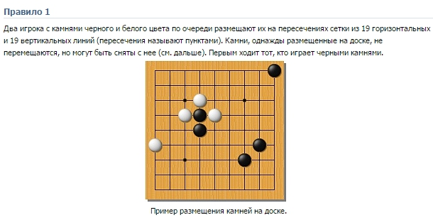

The two players with stones of black and white in turn
place them at the intersections of a grid of 19 horizontal
and 19 vertical lines (called points of intersection).
Stones, once placed on the board, do not move, but can
be removed from it. Black stones make tthe first move.

The example of placing stones on the board.